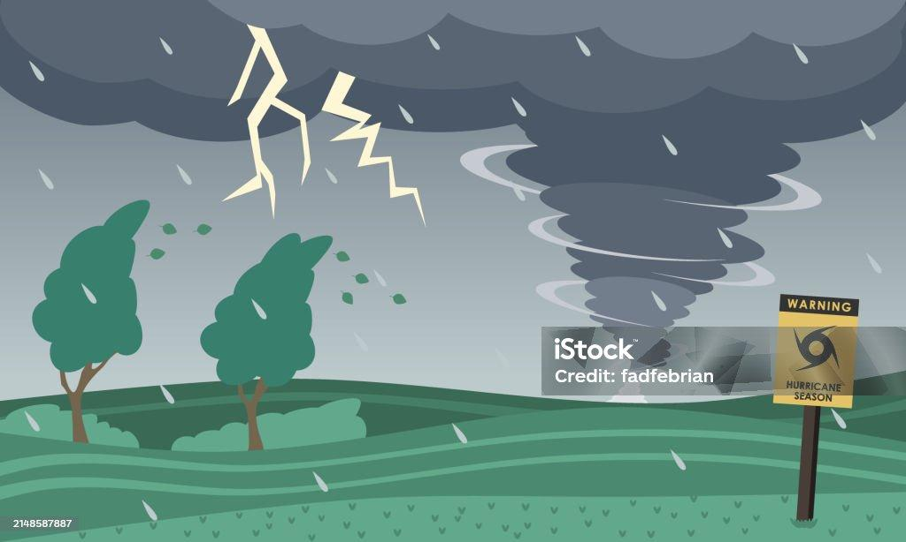

Puncak Musim Hujan 2026/2027 Diprediksi Desember hingga Februari, Masyarakat Diimbau Waspadai Risiko Penyakit

Bandung — Badan Meteorologi, Klimatologi, dan Geofisika (BMKG) memprediksi puncak musim hujan di sebagian besar wilayah Indonesia akan berlangsung pada Desember 2026 hingga Februari 2027. Kondisi tersebut mendorong masyarakat untuk meningkatkan kewaspadaan, tidak hanya terhadap potensi bencana hidrometeorologi, tetapi juga risiko gangguan kesehatan selama musim hujan.
Dikutip dari laman resmi BMKG pada 10 November 2026, sebagian besar wilayah Indonesia mulai memasuki musim hujan pada November dan Desember 2026. Sementara itu, puncak musim hujan diperkirakan berlangsung selama tiga bulan, yakni Desember 2026, Januari 2027, dan Februari 2027.
Kepala BMKG, Teuku Faisal Fathani, menjelaskan bahwa musim hujan tahun ini mengalami kemunduran sekitar 20–30 hari dibandingkan pola normalnya.
“Artinya, hujan yang jatuh itu sama dengan rata-rata klimatologis 30 tahun terakhir, tetapi durasinya lebih pendek sehingga memerlukan antisipasi terjadinya bencana hidrometeorologi basah, yaitu banjir dan longsor akibat curah hujan ekstrem,” kata Faisal, dikutip dari keterangan resmi BMKG.
Selain berpotensi menimbulkan banjir dan longsor, kondisi musim hujan juga perlu diperhatikan dari sisi kesehatan. Kementerian Kesehatan RI melalui Unit Pelayanan Kesehatan (UPK) menyebutkan beberapa penyakit yang perlu diwaspadai selama musim hujan, di antaranya demam berdarah dengue (DBD), diare, leptospirosis, infeksi saluran pernapasan akut (ISPA), dan penyakit kulit.
Penyakit tersebut berkaitan dengan kondisi lingkungan yang lembap, munculnya genangan air, serta kemungkinan menurunnya kualitas kebersihan lingkungan.
Jaga Kesehatan Selama Musim Hujan
Dalam artikel bertajuk “5 Tips Sehat Menghadapi Musim Hujan”, Kementerian Kesehatan mengimbau masyarakat untuk menjaga kebersihan lingkungan, menggunakan pakaian hangat, mengonsumsi makanan bergizi, serta segera membersihkan diri setelah kehujanan.
Masyarakat juga disarankan memperhatikan kebersihan tempat penampungan air guna mencegah perkembangbiakan nyamuk penyebab DBD.
Pantau Informasi Cuaca Resmi
BMKG mengingatkan masyarakat agar memanfaatkan informasi prakiraan cuaca dan peringatan dini melalui saluran resmi, seperti situs BMKG dan aplikasi InfoBMKG.
Dengan meningkatnya potensi hujan pada akhir tahun hingga awal 2027, masyarakat diharapkan dapat mempersiapkan diri dan menjaga kondisi kesehatan. Kewaspadaan terhadap perubahan cuaca serta penerapan perilaku hidup bersih dan sehat menjadi langkah penting untuk mengurangi risiko gangguan kesehatan selama musim hujan.
Oleh: Alawiyah Mutmainnah
Sumber
Badan Meteorologi, Klimatologi, dan Geofisika (BMKG). (10 November 2026). BMKG Optimalkan Informasi Peringatan Dini dan Antisipasi Bencana Hidrometeorologi Jelang Musim Hujan. bmkg.go.id
Kementerian Kesehatan RI – Unit Pelayanan Kesehatan. 5 Tips Sehat Menghadapi Musim Hujan. upk.kemkes.go.id